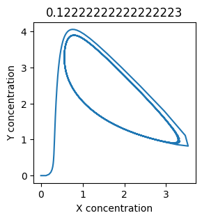

Solution (2.16)#
Solution to Exercise 2.16
To model the equations we can follow the same structure we used in the workshop.
# import necessary libraries
import numpy as np
import matplotlib.pyplot as plt
# set up variables and arrays
n = 300
k1 = 0.2
k2 = 0.4
k3 = 0.1
k4 = 0.3
X = np.zeros(n)
Y = np.zeros(n)
# initialise variables (not strictly necessary here!)
X[0] = 0
Y[0] = 0
# implement equations
for i in range(n - 1):
X[i+1] = X[i] + k1 - k2*X[i] + k3*(X[i]**2)*Y[i]
Y[i+1] = Y[i] + k4*X[i] - k3*(X[i]**2)*Y[i]
# plot so we can see what happens
plt.figure(figsize=(3,3))
plt.plot(X, label="X")
plt.plot(Y, label="Y")
plt.xlabel("Time (seconds)")
plt.ylabel("Concentration")
plt.legend()
plt.figure(figsize=(3,3))
plt.plot(X, Y)
plt.xlabel("X concentration")
plt.ylabel("Y concentration")
Text(0, 0.5, 'Y concentration')


Note that how we have used plt.plot(X, label="X") and plt.legend() to add a legend to the plot.
Experiment with \(k_1\)#
We can use np.linspace to test a few different values for \(k_1\). Let’s try the interval \([0, 0.3]\).
for k1 in np.linspace(0.1, 0.3, 10):
X = np.zeros(n)
X[0] = 0
Y = np.zeros(n)
Y[0] = 0
for i in range(n - 1):
X[i+1] = X[i] + k1 - k2*X[i] + k3*X[i]**2*Y[i]
Y[i+1] = Y[i] + k4*X[i] - k3*X[i]**2*Y[i]
plt.figure(figsize=(3,3))
plt.plot(X, Y)
plt.xlabel("X concentration")
plt.ylabel("Y concentration")
plt.title(k1) # add title to each figure so we can see what the value is
plt.figure(figsize=(3,3))
plt.plot(X)
plt.plot(Y)
plt.xlabel("Time (seconds)")
plt.ylabel("Concentrations")
plt.title(k1) # add title to each figure so we can see what the value is

We see oscillations first appear when \(k_1 \approx 0.079\), these continue until \(k_1 \approx 0.25\) when \(X\) stops oscillating.